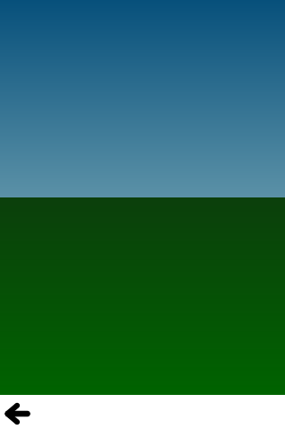

QtQuick Examples - Animation
This is a collection of QML Animation examples.

This is a collection of small QML examples relating to animation. Each example is a small QML file emphasizing a particular element or feature.
ColorAnimation demonstrates using a color animation to fade a sky from day to night.
PropertyAnimation demonstrates using a number animation to bounce a circle up and down.
Behaviors demonstrates using behaviors to animate moving a rectangle to whereever you click.
Wiggly Text demonstrates using more complex behaviors to animate and wiggle some text around as you drag it. It does this by assigning a complex binding to each letter:
Then, it uses behaviors to animate the movement on each letter:
Tv Tennis demonstrates using more complex behaviors to get paddles following a ball for an infinite game. Again a binding which depends on other values is applied to the position and a behavior provided the animation.
Easing Curves shows off all the easing curves available in Qt Quick animations.
States demonstrates how the properties of an item can vary between states. It defines several states:
Note that there is also the implicit 'base state' from properties set directly on elements.
Transitions takes the States example and animates the property changes by setting transitions:
PathAnimation animates an image along a beizer curve using a PathAnimation.
PathInterpolator animates an image along the same beizer curve, using a PathInterpolator instead.
Files:
- animation/animation.qml
- animation/basics/color-animation.qml
- animation/basics/property-animation.qml
- animation/behaviors/SideRect.qml
- animation/behaviors/behavior-example.qml
- animation/behaviors/tvtennis.qml
- animation/behaviors/wigglytext.qml
- animation/easing/easing.qml
- animation/pathanimation/pathanimation.qml
- animation/pathinterpolator/pathinterpolator.qml
- animation/states/states.qml
- animation/states/transitions.qml
- animation/main.cpp
- animation/animation.pro
- animation/animation.qmlproject
- animation/animation.qrc